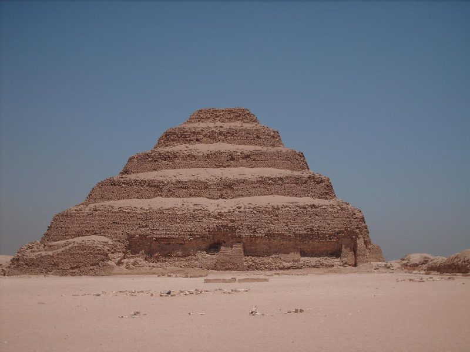

THE STEP PYRAMID
Three thousand years of worship made a god — and the man is still inside it, trying to finish the building.

THE STEP PYRAMID
Three thousand years of worship made a god — and the man is still inside it, trying to finish the building.
Feature map
Level-by-level features, as the figure refined them.
Foundation
Cost: 2 CE per 10-ft section · Action: raise.
Tier V cursed technique · Suggested CE ability: INT · Combat role: controller / builder The technique raises architecture from cursed energy — limestone-white, warm to the touch, smelling of dust and myrrh. Everything raised is announced: the architect speaks the work before it stands. ("A vow unheard is a vow unwitnessed.") Raised structures: walls and courts are solid (each 10-ft section: AC 15, 30 HP). They persist for 1 minute (10 minutes at L18+), or permanently if raised during the L20 ascension. You may maintain structures whose total sections do not exceed 6 + PB.
Raise mastaba-block wall sections within 60 ft: each section is 10 ft long, 10 ft high, 5 ft thick. Total cover. Sections must connect to the ground or to another section you raised. You may raise up to PB sections per action. The first course. Every building begins with a declaration of where the wall stands.
The First Court
Cost: 4 CE · Action: raise and declare.
Raise up to four connected wall sections forming an enclosure (up to 30 ft square; fewer sections may use existing walls or terrain). Upon raising it, declare one Law of the Court — spoken aloud, heard by all present: - Law of Stillness: the court's interior is difficult terrain. - Law of Weight: ranged attacks made through or into the court have disadvantage — the air is heavy with declared stone. - Law of Passage: name the creatures permitted within; all others cannot enter (the geometry refuses — they may still attack the walls). The Law is announced at the threshold — any creature that enters after the announcement consents to it (the willing valve: do not enter). Creatures already inside the area when the court is raised are not bound by the Law — they were not announced to. The Law lasts while the court stands. The court is the pyramid's argument in miniature: here, this holds.
The Shaft & The Teeth
The Shaft — Cost: 3 CE · Bonus action: open.
Open a 10-ft square, 20-ft deep shaft at a point within 60 ft. Each creature there makes a DEX save vs your technique save DC or falls (2d6 bludgeoning). Climbing out costs 20 ft of movement. The shaft fills after 1 minute. The Teeth — Passive: your raised structures are warded. Each section gains +15 HP, and any creature that strikes a section with a melee attack takes PB force damage (the stone answers). The pyramid defends its architect. It has had forty-seven centuries of practice.
The Architect's Vow
Cost: 6 CE · Action: inscribe.
Inscribe a binding Law with a price into a structure you raised. The Law is spoken at the threshold; entry after the announcement is consent. Creatures already inside the structure when the Law is inscribed are not bound by it — they were not announced to. When the Law is violated, Heaven collects — no save (it is a vow, not an attack). Examples: - "Whoever sheds blood within this court pays 2d8 force." - "No weapon may be drawn here; the drawn blade costs its bearer 1d10 force per round held." - "Whoever speaks falsehood in this court is marked — all here know it." (Heaven marks the lie; no save, but only deliberate falsehood.) You may maintain inscribed Laws on up to PB structures. A Law ends when its structure falls. The vow is the building's soul. Stone forgets nothing, and Heaven forgets less.
The Seventh Stage
Cost: 12 CE · Action: raise · Once per long rest.
Raise a complete step pyramid: 60-ft square base, six tiers, 60 ft tall, centered within 120 ft. Each tier carries one Law of your choice (any Court Law or inscribed Vow-fine; the fines apply per tier). The stone knows its builder: your allies treat the pyramid as normal terrain; your enemies treat it as difficult terrain and cannot benefit from cover behind its stones. Lasts 10 minutes. Six stages stood at Saqqara. The seventh stands wherever he decides.
Maximum, Domain, or equivalent.
Capstone material.
"SAQQARA, THE FIRST STONE"
The barrier is a necropolis at noon — white stone, impossible shadows, the smell of dust and myrrh. Sure-hit: the ground is his. At initiative 20, the necropolis reshapes itself at his word: open shafts beneath up to PB hostile creatures (DEX save vs technique save DC or fall 20 ft, 2d6 bludgeoning) and/or raise wall sections (up to PB) to split the battlefield — wall sections cannot be raised in a space occupied by a creature; the stone rises around them. The sure-hit guarantees the terrain changes at his chosen points — the only save is against falling, not against the ground moving. Structures raised inside the Domain cost no CE. The first stone was laid here. All stone since has been commentary.
- Clash points
- 1000
- Burnout
- 3 rounds
- Duration
- 3 minutes
- Radius
- 60 ft
- Activation ✦
- full-turn action
- CE cost ✦
- 20
✦ Canon: figure Domains are Specific Domains — the stated profile governs, not the player point-unlock table.
The God Ascends
The Ascension (capstone): once per long rest, the god-half manifests fully for 1 minute. While ascended: - Structures you raise are permanent — real stone, remaining after combat (GM adjudicates campaign-map changes). - Your inscribed Vow-fines bypass resistance (the god's due is not negotiable). - You may raise structures as a bonus action. And the standing question, for the GM: every permanent work brings the Seventh Stage closer. Track what he builds. When the campaign's stone is sufficient, he will begin — and every faction will come to Saqqara, or wherever he lays the first course, to decide what the Seventh Stage is for.
Build-defining options.
Historical-figure techniques grant no feats — the figure's art is complete as written, and the builder's feat picker excludes these techniques. Take the progression as the build.
Edge cases and shared systems.
Campaign canon notes